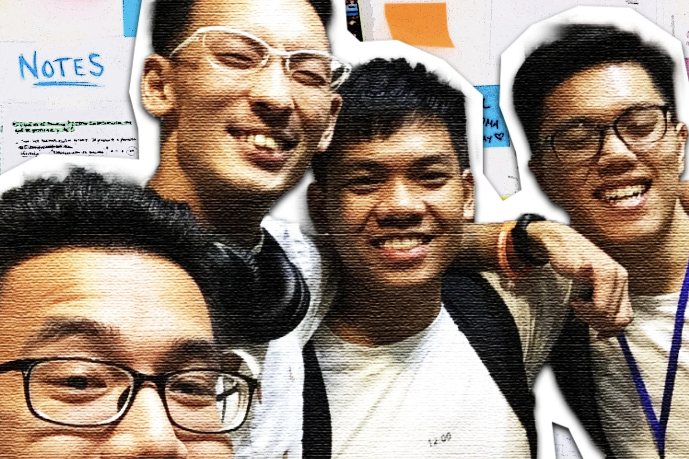

My Identity in My Career
By Huy Quang Vũ | From childhood to the present day, I have always been passionate about creating something meaningful, just as Apple CEO Tim Cook talks about enriching people's lives. Over the years, my career aspirations have evolved, but my mindset of building valuable products has remained constant. I believe I've found a career path that allows me to channel this passion into making a positive impact on society.
During my early years, I dreamt of being like Superman, a symbol of humanity's values. In my teenage years, my fascination shifted to cars, and I aspired to become a mechanic, creating beautiful vehicles that people would love. As I matured, technology, especially Apple products, captured my interest, leading me to pursue a career in tech.
Apart from my professional journey, I also enjoy hobbies like music and football. Music has been a cherished passion in my life, where I play by feeling rather than sheet music, infusing emotion into every note. Additionally, football has been a longstanding interest, with a preference for a defensive role to architect our team's strategy, emphasizing teamwork over individual glory, a sentiment that extends even to football video games where I relish managerial modes that emphasize collective play.
My desire to contribute to humanity has been a common thread throughout my life, fostering a product-oriented mindset that originated in my childhood. However, I didn't fully grasp the significance of this mindset until I became a Software Engineer. In this role, I honed my skills in clean coding, technology stacks, and delved deep into programming languages' core libraries. This experience instilled discipline and organization in me.
Despite my growth as a Software Engineer, I realized that my personality was better suited for roles that allowed me to contribute to the business aspects of a product. I wanted to understand how my work influenced the product's success. So, I transitioned to the role of a Business Analyst, immersing myself in a new world of business knowledge and expanding my skills in UX design, making me feel valuable to both the business and society.
After several years in roles as a Software Engineer and Business Analyst, and after completing my degree, I took a much-needed break to reevaluate my career path. During this time, I embarked on a tourism venture, which taught me valuable lessons in product management and development, from ideation to marketing strategy and customer service. This experience solidified my decision to pursue a career in product management, a path I'm determined to follow, no matter the challenges. I believe the skills I gained during my venture, combined with my existing computer knowledge, will be instrumental in this endeavor.